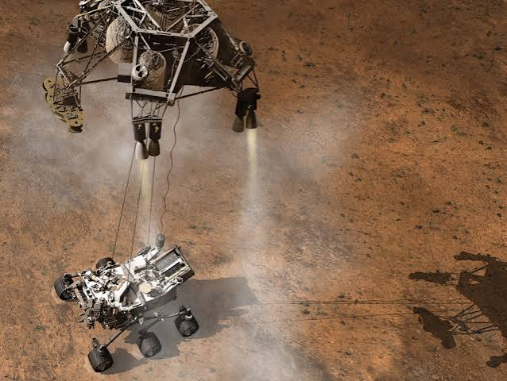
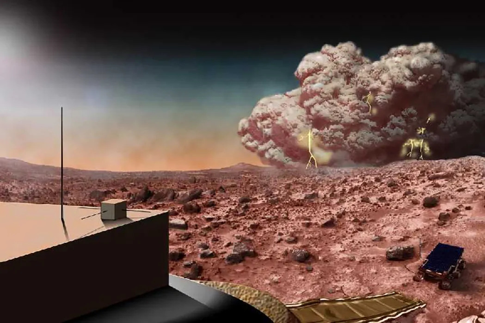

Mars — the fourth planet from the Sun — is a dusty, cold, desert world with a very thin atmosphere. This dynamic planet has seasons, polar ice caps, extinct volcanoes, canyons, and weather. Mars is one of the most explored bodies in our solar system, and it's the only planet where we've sent rovers to roam the alien landscape. NASA missions have found lots of evidence that Mars was much wetter and warmer, with a thicker atmosphere, billions of years ago.


With a radius of 2,106 miles (3,390 kilometers), Mars is about half the size of Earth. If Earth were the size of a nickel, Mars would be about as big as a raspberry. From an average distance of 142 million miles (228 million kilometers), Mars is 1.5 astronomical units away from the Sun. One astronomical unit (abbreviated as AU), is the distance from the Sun to Earth. From this distance, it takes sunlight 13 minutes to travel from the Sun to Mars.
As Mars orbits the Sun, it completes one rotation every 24.6 hours, which is very similar to one day on Earth (23.9 hours). Martian days are called sols — short for "solar day." A year on Mars lasts 669.6 sols, which is the same as 687 Earth days. Mars' axis of rotation is tilted 25 degrees with respect to the plane of its orbit around the Sun. This is another similarity with Earth, which has an axial tilt of 23.4 degrees. Like Earth, Mars has distinct seasons, but they last longer than seasons here on Earth since Mars takes longer to orbit the Sun (because it's farther away). And while here on Earth the seasons are evenly spread over the year, lasting 3 months (or one quarter of a year), on Mars the seasons vary in length because of Mars' elliptical, egg-shaped orbit around the Sun. Spring in the northern hemisphere (autumn in the southern) is the longest season at 194 sols. Autumn in the northern hemisphere (spring in the southern) is the shortest at 142 days. Northern winter/southern summer is 154 sols, and northern summer/southern winter is 178 sols.
When the solar system settled into its current layout about 4.5 billion years ago, Mars formed when gravity pulled swirling gas and dust in to become the fourth planet from the Sun. Mars is about half the size of Earth, and like its fellow terrestrial planets, it has a central core, a rocky mantle, and a solid crust.
Mars has a dense core at its center between 930 and 1,300 miles (1,500 to 2,100 kilometers) in radius. It's made of iron, nickel, and sulfur. Surrounding the core is a rocky mantle between 770 and 1,170 miles (1,240 to 1,880 kilometers) thick, and above that, a crust made of iron, magnesium, aluminum, calcium, and potassium. This crust is between 6 and 30 miles (10 to 50 kilometers) deep.
The Red Planet is actually many colors. At the surface, we see colors such as brown, gold, and tan. The reason Mars looks reddish is due to oxidization — or rusting — of iron in the rocks, regolith (Martian “soil”), and dust of Mars. This dust gets kicked up into the atmosphere and from a distance makes the planet appear mostly red. Interestingly, while Mars is about half the diameter of Earth, its surface has nearly the same area as Earth’s dry land. Its volcanoes, impact craters, crustal movement, and atmospheric conditions such as dust storms have altered the landscape of Mars over many years, creating some of the solar system's most interesting topographical features.
Mars has a thin atmosphere made up mostly of carbon dioxide, nitrogen, and argon gases. To our eyes, the sky would be hazy and red because of suspended dust instead of the familiar blue tint we see on Earth. Mars' sparse atmosphere doesn't offer much protection from impacts by such objects as meteorites, asteroids, and comets. The temperature on Mars can be as high as 70 degrees Fahrenheit (20 degrees Celsius) or as low as about -225 degrees Fahrenheit (-153 degrees Celsius). And because the atmosphere is so thin, heat from the Sun easily escapes this planet. If you were to stand on the surface of Mars on the equator at noon, it would feel like spring at your feet (75 degrees Fahrenheit or 24 degrees Celsius) and winter at your head (32 degrees Fahrenheit or 0 degrees Celsius). Occasionally, winds on Mars are strong enough to create dust storms that cover much of the planet. After such storms, it can be months before all of the dust settles.
Mars has no global magnetic field today, but areas of the Martian crust in the southern hemisphere are highly magnetized, indicating traces of a magnetic field from 4 billion years ago.
Credit: https://science.nasa.gov/mars/facts/